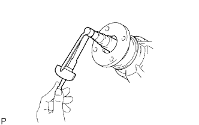

САЛЬНИК ЧАШКИ ЗАДНЕГО ДИФФЕРЕНЦИАЛА > ЗАМЕНА |
| 1. СНИМИТЕ ЗАДНИЙ КАРДАННЫЙ ВАЛ В СБОРЕ |
Снимите задний карданный вал в сборе (Нажмите здесь).
| 2. СНИМИТЕ ГАЙКУ ЗАДНЕЙ ВЕДУЩЕЙ ШЕСТЕРНИ |
С помощью SST и молотка ослабьте накерненную часть гайки задней ведущей шестерни.
Удерживайте соединительный фланец с помощью SST.
С помощью торцевого ключа с головкой 30 мм отверните гайку задней ведущей шестерни.
| 3. СНИМИТЕ СОЕДИНИТЕЛЬНЫЙ ФЛАНЕЦ ЗАДНЕЙ ВЕДУЩЕЙ ШЕСТЕРНИ В СБОРЕ |
 |
С помощью SST снимите соединительный фланец задней ведущей шестерни в сборе.
| 4. СНИМИТЕ САЛЬНИК ЧАШКИ ЗАДНЕГО ДИФФЕРЕНЦИАЛА |
С помощью SST снимите сальник чашки заднего дифференциала.
| *1 | Сальник |
| *2 | Маслоотражатель |
| 5. СНИМИТЕ МАСЛООТРАЖАТЕЛЬ ВЕДУЩЕЙ ШЕСТЕРНИ ЗАДНЕГО ДИФФЕРЕНЦИАЛА |
 |
Снимите маслоотражатель ведущей шестерни заднего дифференциала.
| 6. СНИМИТЕ ПЕРЕДНИЙ КОНИЧЕСКИЙ РОЛИКОВЫЙ ПОДШИПНИК ЗАДНЕЙ ВЕДУЩЕЙ ШЕСТЕРНИ |
 |
С помощью SST снимите конический роликовый подшипник задней ведущей шестерни (внутренний).
 |
С помощью SST выбейте конический роликовый подшипник задней ведущей шестерни (наружный).
| 7. СНИМИТЕ МАСЛОНАКОПИТЕЛЬНОЕ КОЛЬЦО ДИФФЕРЕНЦИАЛА |
 |
С помощью отвертки и молотка выбейте маслонакопительное кольцо дифференциала.
| 8. СНИМИТЕ РАСПОРНУЮ ВТУЛКУ ПОДШИПНИКА ВЕДУЩЕЙ ШЕСТЕРНИ ЗАДНЕГО ДИФФЕРЕНЦИАЛА |
| 9. УСТАНОВИТЕ РАСПОРНУЮ ВТУЛКУ ПОДШИПНИКА ВЕДУЩЕЙ ШЕСТЕРНИ ЗАДНЕГО ДИФФЕРЕНЦИАЛА |
 |
Установите новую распорную втулку подшипника ведущей шестерни заднего дифференциала.
| 10. УСТАНОВИТЕ МАСЛОНАКОПИТЕЛЬНОЕ КОЛЬЦО ДИФФЕРЕНЦИАЛА |
С помощью SST и молотка вбейте новое маслонакопительное кольцо дифференциала.
| 11. УСТАНОВИТЕ ПЕРЕДНИЙ КОНИЧЕСКИЙ РОЛИКОВЫЙ ПОДШИПНИК ЗАДНЕЙ ВЕДУЩЕЙ ШЕСТЕРНИ |
С помощью SST и молотка вбейте передний роликовый подшипник задней ведущей шестерни (наружный).
Установите передний роликовый подшипник задней ведущей шестерни (внутренний).
| 12. УСТАНОВИТЕ МАСЛООТРАЖАТЕЛЬ ВЕДУЩЕЙ ШЕСТЕРНИ ЗАДНЕГО ДИФФЕРЕНЦИАЛА |
|
Установите маслоотражатель ведущей шестерни заднего дифференциала.
| 13. УСТАНОВИТЕ САЛЬНИК ЧАШКИ ЗАДНЕГО ДИФФЕРЕНЦИАЛА |
Нанесите универсальную консистентную смазку на кромку нового сальника.
С помощью SST и молотка вбейте сальник чашки заднего дифференциала.
| *1 | Глубина установки сальника |
| 14. УСТАНОВИТЕ СОЕДИНИТЕЛЬНЫЙ ФЛАНЕЦ ЗАДНЕЙ ВЕДУЩЕЙ ШЕСТЕРНИ В СБОРЕ |
 |
С помощью SST установите соединительный фланец задней ведущей шестерни в сборе.
Удерживая соединительный фланец на месте с помощью SST, заверните гайку задней ведущей шестерни.
| 15. ПРОВЕРЬТЕ ПРЕДНАТЯГ ВЕДУЩЕЙ ШЕСТЕРНИ ДИФФЕРЕНЦИАЛА |
|  |
Динамометрическим ключом измерьте преднатяг.
| Параметр / Устройство | Заданные условия |
| Новый подшипник | 0,83 - 2,18 Н*м (8,64 - 22,2 кгс*см, 7,35 - 19,3 фунт-сила-дюймов) |
| Подшипник, бывший в употреблении | 0,88 - 1,98 Н*м (8,97 - 20,2 кгс*см, 7,79 - 17,5 фунт-сила-дюймов) |
| 16. НАКЕРНИТЕ ГАЙКУ ЗАДНЕЙ ВЕДУЩЕЙ ШЕСТЕРНИ |
 |
С помощью молотка и зубила накерните гайку задней ведущей шестерни.
| 17. УСТАНОВИТЕ ЗАДНИЙ КАРДАННЫЙ ВАЛ В СБОРЕ |
Установите задний карданный вал в сборе (Нажмите здесь).
| 18. ДОБАВЬТЕ МАСЛО ДЛЯ ДИФФЕРЕНЦИАЛА |
Снимите пробку горловины дифференциала и прокладку.
 |
Залейте в чашку заднего дифференциала в сборе столько масла, сколько требуется, чтобы уровень масла попал в зону 0-5 мм (0-0,197 дюйма) у нижней кромки отверстия наливной горловины.
| Тип дифференциала | Тип и вязкость масла | Заданные условия |
| Стандартный | Фирменное масло для дифференциала LT 75W-85 GL-5 от компании Тойота или аналогичное | 1,35-1,45 л (1,43-1,53 кварты США, 1,18-1,27 английской кварты) |
| Тип дифференциала | Тип и вязкость масла | Тип кузова | Заданные условия |
| Стандартный | Фирменное масло для дифференциала LT 75W-85 GL-5 от компании Тойота или аналогичное | Для 5-дверных моделей | 2,65 - 2,75 л (2,80 - 2,91 кварты США, 2,33 - 2,42 английской кварты) |
| Для 3-дверных моделей | 2,15 - 2,25 л (2,27 - 2,38 кварты США, 1,89 - 1,98 английской кварты) | ||
| С блокировкой дифференциала | Фирменное масло для дифференциала LT 75W-85 GL-5 от компании Тойота или аналогичное | Для 5-дверных моделей | 2,60 - 2,70 л (2,75 - 2,85 кварты США, 2,29 - 2,38 английской кварты) |
| Для 3-дверных моделей | 2,15 - 2,25 л (2,27 - 2,38 кварты США, 1,89 - 1,98 английской кварты) |
Установите новую прокладку и пробку наливной горловины дифференциала.
Совершите поездку на автомобиле и снова проверьте уровень масла.
Если необходимо, добавьте масло для дифференциала.
| 19. ПРОВЕРЬТЕ, НЕТ ЛИ УТЕЧКИ МАСЛА ДИФФЕРЕНЦИАЛА |